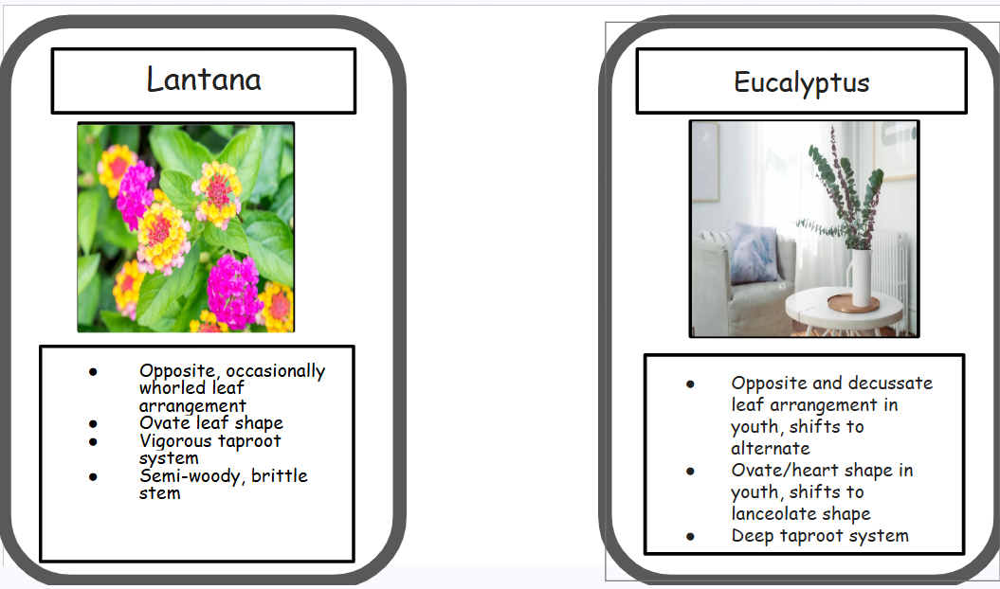
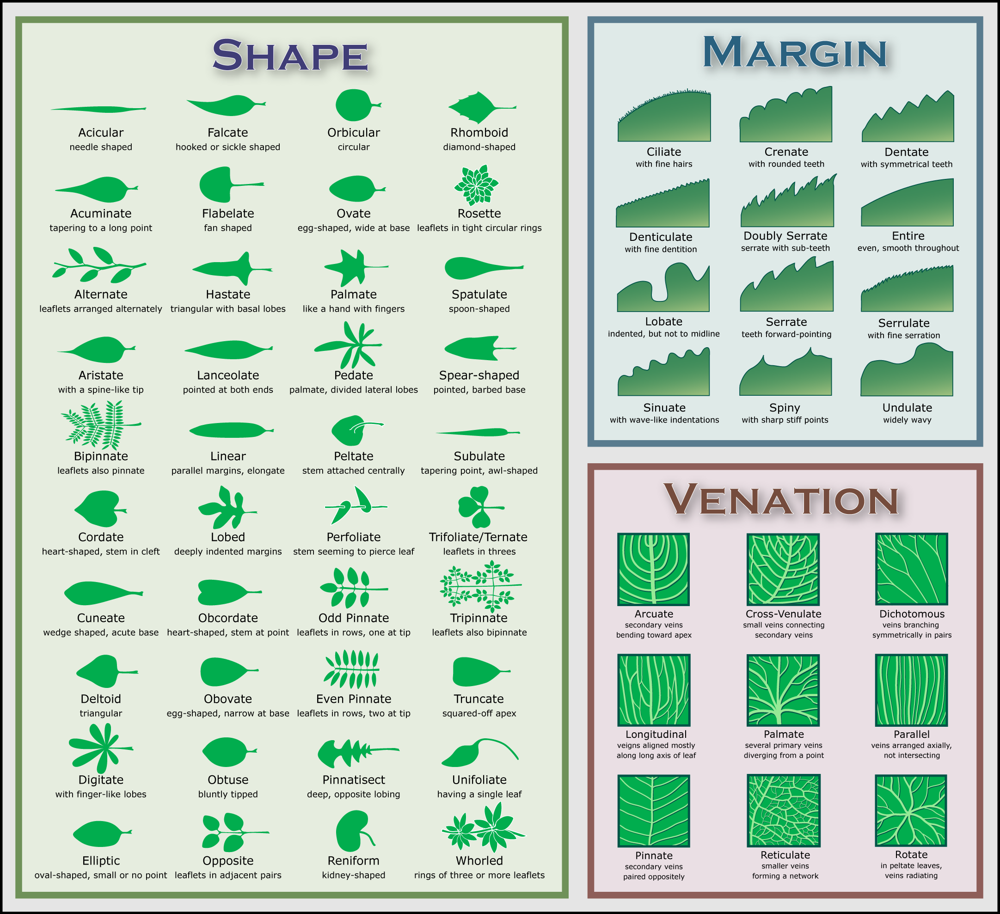

Projects
Ultimate Tic-Tac-Toe – Paper Prototype
Project Overview:
This paper prototype explores Ultimate Tic-Tac-Toe, a layered two-player strategy game
built around a grid of smaller grids. The objective is to win three mini-boards in a row
on a larger meta-board, creating multi-level strategic decision-making.

Design Goal:
Increase the strategic depth of traditional Tic-Tac-Toe while keeping the rules
understandable for first-time players. The system needed to function entirely without code.
Core Mechanic:
Each move determines the opponent’s next board location. This forced board placement
creates two layers of strategic planning: players must think about winning the current
mini-board while also controlling their opponent’s next move.
Constraints:
- No digital rule enforcement
- Rules had to be clearly communicated through layout and explanation
- The board design needed to visually communicate the layered structure
- The system had to be fully playable as a paper prototype
Playtesting Insights:
Players initially needed clarification on the forced placement rule.
Once understood, they appreciated the added strategic complexity compared to standard Tic-Tac-Toe.
This reinforced the importance of onboarding and rule communication.
Iteration Concept:
A future iteration would expand the main grid from 9x9 to 18x18, increasing the
number of possible moves and encouraging deeper long-term planning.
This would preserve the core mechanic while significantly increasing strategic depth.
Reflection:
This project demonstrated that strong mechanics rely on clarity.
Even well-designed systems can fail if players do not immediately understand
how their decisions shape future outcomes.
Stranger Things: Escape Hawkins – Board Game
Overview of the Game:
Players take on the roles of the kids of Hawkins: Will, Mike, Dustin, and Lucas, who are trapped in the Upside Down.
The goal is to reach the center “Welcome to Hawkins” sign while avoiding the Demogorgon. Players collect power-ups
to gain strategic advantages.
Game Designer: Evan Zinzi
Constraints:
Short, fast-paced board game; combine movement, chance, and strategy; reflect the Stranger Things theme.
Tools Used:
Google Slides (board prototype), Google Docs (rules), dice, tokens.

This project is a non-commercial fan game created for educational purposes. Stranger Things and all related characters, settings, and trademarks are the property of Netflix. All rights belong to their respective owners.
Design:
- Power-ups (011, Will the Wise, Radio Tower, Flashlight, Mrs. Wheeler, Bike) add strategic options.
- Demogorgon chase mechanic creates tension and risk.
- Dice range shortened to 1–6 for faster turns.
- Central goal “Welcome to Hawkins” sign gives clarity and theme focus.
- Challenges like insufficient power-ups and unclear starting positions were solved by adding new power-ups and labeling a Start space.
Playtesting Insights:
- Players immediately understood the theme and enjoyed the Demogorgon chase.
- Frustration arose when landing on the Demogorgon, which also increased suspense.
- Feedback suggested adding more power-ups and clarifying rules.
- Adjustments made: added new power-ups, clarified descriptions, reduced dice range, improved board layout.
Next Steps / Iteration Concept:
Add a branching path allowing players to choose between a safer, longer route or a riskier, shorter path closer to the Demogorgon.
This increases meaningful strategic choices and enhances the tension-reward dynamic without slowing down gameplay.
Piper: Tides of Courage – Board Game
Overview of the Game:
Piper: Tides of Courage is a party board game where players take on the role of shorebirds collecting shells along a dynamic shoreline. Players must decide how far to risk moving toward the water for higher-value shells while avoiding waves that can reset their progress. The goal is to reach 15 points first.


Game Designers: Evan Zinzi, Mason Toothman, Ezra Etherly
Constraints:
The game was first designed digitally in Canva due to limited time, allowing us to quickly prototype and test core mechanics. As development progressed, we iterated into a physical paper board game using simple materials such as dice, tokens, and a hand-drawn board. This transition required adapting the design to ensure the rules remained clear, balanced, and fully playable without digital support.
Tools Used:
Paper prototype, dice, tokens, rule design, and playtesting feedback.
Design:
- Risk vs reward system with higher-value shells closer to the water
- Dice-based action system (1–3 actions per turn) to increase variation
- Wave mechanic that pushes players back and removes unbanked shells
- Return-to-nest system to secure points
Playtesting Insights:
- Early versions lacked meaningful decision-making and felt repetitive
- Players reported too much downtime and a first-player advantage
- Feedback led to adding dice-based actions and improving pacing
Next Steps / Iteration Concept:
Add a tide prediction system that allows players to anticipate wave movement. This would improve strategic planning and reduce frustration from unpredictability.
Morpho-Headz – Plant Morphology Deduction Game
Overview of the Game:
Morpho-Headz is a deduction-based plant morphology game where players identify hidden plant species by asking structured yes-or-no questions about structural traits. Players must analyze leaf shape, arrangement, stem type, and other morphological features to correctly deduce their assigned plant.


Disclaimer: Base diagram adapted from Wikipedia botanical illustration references and modified for educational gameplay use.
Game Designers: Evan Zinzi, Riley Harris, Ezra Etherly
Context:
This game was developed for a plant morphology class, requiring accurate representation of biological traits while still maintaining clear and engaging gameplay systems.
Constraints:
Limited to 18 plant cards, yes-or-no questioning only, and a requirement that players must unlock three traits before guessing a plant species. The game also needed to remain accessible to players without prior botany knowledge.
Tools Used:
Google Slides (card design), Google Docs (rules system), printed visual field guides, and in-class playtesting.
Design:
- Three-Trait Gate prevents random guessing and enforces structured deduction
- Momentum system rewards correct reasoning chains with additional questions
- Mutation mechanic allows players to recover momentum after incorrect guesses
- Visual field guide translates botanical terminology into recognizable patterns
Playtesting Insights:
- Players relied heavily on visual guides rather than terminology
- Deduction became engaging once trait categories were understood
- Mutation mechanic increased engagement during downtime
- Some traits needed clarification due to overlap in meaning
Next Steps / Iteration Concept:
Add a trait-elimination mechanic allowing players to rule out entire categories once per game. This would increase strategic control and reduce situations where players get stuck in incorrect deduction paths.
Contact
Email: ezinzi@gmail.com